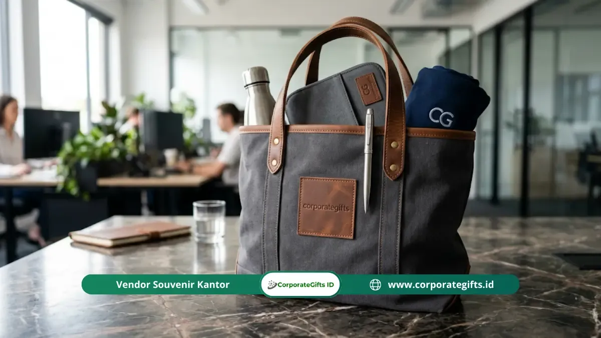

Corporate Gifts ID - Isi goodie bag seminar korporat yang ideal terdiri dari 4 hingga 7 item, mencakup barang fungsional harian berlogo perusahaan (pulpen, notebook, tumbler), materi seminar yang informatif, dan minimal satu item premium untuk memperkuat kesan peserta terhadap acara.
Poin Kunci Isi Goodie Bag Seminar Korporat:
- Fondasi Fungsional: Item praktis harian seperti pulpen gel/metal, agenda kerja, dan tumbler stainless steel menjadi isi paling berdaya guna tinggi.
- Jumlah Item Seimbang: Komposisi ideal berkisar antara 4 hingga 7 item per paket agar terasa padat tanpa terkesan membebani peserta.
- Segmentasi Peserta: Kurasi isi wajib disesuaikan dengan profil demografis audiens (eksekutif, staf, atau generasi milenial/Gen Z).
- Relevansi Edukatif: Menyertakan materi seminar fisik atau digital (QR code) melipatgandakan nilai substansi acara.
- Dukungan Nilai ESG: Produk ramah lingkungan berbahan bambu atau kemasan reusable kian diutamakan oleh korporasi modern.
Mengapa Pilihan Isi Goodie Bag Seminar Korporat Sangat Menentukan?
Pilihan isi goodie bag seminar korporat menentukan apakah paket tersebut benar-benar dimanfaatkan oleh peserta dalam aktivitas profesional mereka atau justru berakhir diabaikan. Hal ini secara langsung memengaruhi efektivitas branding serta return on investment (ROI) perusahaan penyelenggara.
Berdasarkan riset Advertising Specialty Institute (ASI), produk promosi fungsional yang digunakan sehari-hari menghasilkan rata-rata 344 impresi merek per produk selama masa pemakaiannya, jauh melampaui efektivitas tayangan iklan digital bersponsor pada kisaran biaya yang setara.
Artinya, satu tumbler berlogo perusahaan yang digunakan peserta setiap hari di meja kerja kantor sanggup menghasilkan paparan merek yang konsisten selama berbulan-bulan. Memilih isi goodie bag seminar bukan sekadar memenuhi formalitas panitia, melainkan keputusan komunikasi strategis yang membentuk reputasi profesionalisme penyelenggara.
Item Fungsional: Fondasi Isi Goodie Bag Seminar Korporat
Item fungsional harian merupakan tulang punggung paket cinderamata seminar. Daya guna tinggi memastikan produk disimpan dan digunakan terus-menerus. Berikut daftar item fungsional wajib:
Pulpen Branded Berkualitas
Pulpen adalah perlengkapan seminar paling fundamental yang tidak pernah usang. Kuncinya terletak pada mutu mekanis: pulpen berbahan bodi logam atau pulpen gel dengan tinta halus memberikan sensasi menulis yang jauh lebih memuaskan ketimbang pulpen plastik promosi murah. Cetak laser grafir nama perusahaan atau sablon pad print tajam agar identitas brand tampak elegan.
Buku Catatan atau Notepad Berlogo
Buku catatan agenda berlogo sangat esensial selama sesi pemaparan materi berlangsung dan akan terus dipakai untuk mencatat notula rapat setelah acara usai. Anda dapat memilih varian spiral binding praktis maupun hardcover berlapis kulit sintetis PU mewah sesuai tingkatan acara. Sisipkan lembar sambutan pimpinan dan jadwal simposium pada halaman pembuka untuk memperkuat fungsi informatifnya.
Tumbler atau Botol Minum Custom
Botol minum stainless steel tahan panas dingin (SUS304 vacuum insulated) adalah primadona cinderamata korporat. Peserta yang membawa tumbler berlogo institusi ke berbagai ruang meeting secara langsung menjadi brand ambassador organik bagi perusahaan Anda. Pastikan produk telah tersertifikasi food-grade dan bebas BPA demi kenyamanan serta keamanan kesehatan pengguna.

Komposisi paket goodie bag seminar terpadu: tumbler stainless, buku agenda hardbox, pulpen metal, dan tali lanyard.
Totebag Kain Kanvas
Tas kain kanvas twill tebal berfungsi ganda: sebagai wadah elegan bagi seluruh paket isi seminar kit saat penyerahan di meja registrasi, sekaligus menjadi tas jinjing harian yang modis pasca-acara. Bahan yang kuat dan jahitan penguat bar-tack menjamin totebag ini bertahan lama di tangan peserta.
Item Materi Seminar: Konten yang Memperkuat Relevansi Paket
Keberadaan materi pembelajaran dalam goodie bag seminar korporat menegaskan bobot ilmiah dan edukatif acara. Materi pendukung yang lazim disertakan meliputi:
- Handbook atau modul ringkasan materi cetak bernomor ISBN atau berdesain eksklusif.
- Buku saku agenda acara lengkap dengan jadwal rundown dan profil riwayat hidup narasumber.
- Lembar kerja interaktif atau worksheet studi kasus untuk sesi lokakarya.
- Kartu akses eksklusif berisi QR code menuju portal materi digital dan video rekaman sesi.
- Kartu kontak narasumber dan direktori sponsor pendukung acara.
Integrasi materi digital via QR code merupakan solusi modern yang kian diminati karena membantu menekan pemborosan kertas (paperless) sekaligus mendukung komitmen pelestarian lingkungan.
Item Premium: Meningkatkan Nilai dan Kesan Keseluruhan
Menyematkan satu atau dua produk premium dalam paket goodie bag seminar korporat menciptakan efek kejutan (wow factor) yang meningkatkan prestise acara di mata peserta. Beberapa contoh produk premium terpopuler antara lain:
- Powerbank berdesain slim kapasitas 10.000 mAh dengan teknologi fast charge berlogo sablon UV tahan gores.
- Cardholder atau dompet kartu nama berbahan kulit sintetis premium dengan deboss logo halus.
- Wireless earbuds atau headphone ringkas untuk seminar bertema teknologi dan transformasi digital.
- Desk organizer multifungsi berbahan kayu solid yang mempercantik meja kerja kantor.
- Paket artisan snack atau cokelat premium dalam kemasan personal berstempel segel perusahaan.
Tabel Komposisi Paket Isi Goodie Bag Seminar
Tabel berikut menyajikan matriks perbandingan komposisi item goodie bag berdasarkan skala acara dan alokasi anggaran:
| Tingkatan Paket | Target Audiens | Komposisi Item Isi Goodie Bag |
|---|---|---|
| Paket Reguler (Efisien) | Peserta Umum, Mahasiswa, Workshop Massal | Totebag spunbond/blacu, blocknote spiral A5, pulpen promosi, dan tali lanyard ID card |
| Paket Profesional (Standar) | Staf Korporasi, Manajer Madya, Pelatihan Teknis | Totebag kanvas twill, notebook softcover emboss, tumbler stainless SUS304, pulpen metal, modul cetak |
| Paket Eksekutif VIP | Direksi, Narasumber Utama, Pimpinan BUMN/Instansi | Hardbox magnetik kustom, agenda kulit premium, smart tumbler sensor suhu, powerbank slim, pulpen rollerball grafir nama |
Bagaimana Menyesuaikan Isi Goodie Bag dengan Profil Peserta Seminar?
Kunci keberhasilan cinderamata terletak pada relevansi produk terhadap gaya hidup peserta:
- Peserta Eksekutif Senior: Prioritaskan kemasan rigid box magnetik, pulpen metal berbobot mantap, dan aksesoris kulit berkesan mapan. Hindari item berbobot ringan yang tampak ringkih.
- Karyawan dan Profesional Muda: Sediakan produk berdaya guna kerja tinggi seperti desktop organizer, tumbler tahan panas dingin, dan notebook spiral untuk aktivitas harian.
- Peserta Luar Kota (Delegasi): Pilih item yang ringkas, berbobot ringan, dan mudah dimasukkan ke dalam koper kabin tanpa risiko tumpah atau pecah.
- Generasi Milenial & Gen Z: Tampilkan desain bernuansa minimalis, estetika warna pastel atau monokrom, serta nilai kepedulian terhadap lingkungan (eco-friendly).
Berapa Jumlah Item Ideal dalam Satu Goodie Bag Seminar Korporat?
Rentang 4 hingga 7 item merupakan standar emas bagi paket goodie bag seminar korporat. Jika terlalu sedikit (misalnya hanya 1-2 item), bingkisan akan terasa hampa. Sebaliknya, jika terlalu banyak diisi barang receh bernilai rendah, goodie bag justru terkesan berantakan dan menurunkan persepsi mutu acara.
Pertanyaan Seputar Isi Goodie Bag Seminar (FAQ)
Kesimpulan
Isi goodie bag seminar korporat yang efektif adalah kombinasi harmonis antara produk fungsional berkualitas, materi pembelajaran yang berbobot, dan sentuhan item eksklusif yang merefleksikan nilai-nilai integritas perusahaan Anda.
Selalu utamakan mutu material di atas kuantitas, sesuaikan isi paket dengan kebutuhan audiens, dan pastikan identitas logo perusahaan teraplikasikan dengan teknik cetak presisi tinggi. Bersama CorporateGifts.ID, wujudkan paket seminar kit profesional yang meninggalkan kesan berkesan dan abadi bagi seluruh peserta.

Ditulis oleh: Arinda Zakia
Senior Corporate Gifting SpecialistSpesialis riset merchandise korporat, kurasi paket seminar kit terpadu, dan strategi corporate branding berpengalaman lebih dari 7 tahun dalam industri cinderamata Indonesia.
Lihat Profil Lengkap & Panduan Lainnya